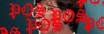

16094350
|
なんとなくの一言
ぷにゅ～むきん・・・かなぁ
|
あなたは98年1月14日から数えて
 人目のお客様ですぅ。
人目のお客様ですぅ。
CVS 最終更新 ---- $Id: main.html,v 1.25 2001/06/09 16:34:13 toyoshim Exp $
|
フレッツ経由で自宅のサーバーに逝けます、えぇ。 このあたりです。現在のデスクトップの様子をリアルタイムで補足できます（笑）。 アンテナがこっちとそっちに。 メインはすっかりBe。 某ゲームのサンプルを受け取りテストプレイ。おぉ！！鈴美ちゃん♪ 自分の曲に合わせて登場ってのはなかなか感慨深いものが！！ なんか、テレビに映る娘を見る父親の気分？ MCDRV for Windowsを作る。超連射86系も御機嫌。 某所で作ってる某ゲームに音楽で参加ってことで久々に曲を作る・・・。 悩んだあげくにMIDI製作はZMUSICで。しみついたMMLが抜けんのじゃ～！ 友人に誘われて、RC-5 Crackingに参加してます。 Team OEDO2010という、なめた名前ですが・・・(^^;。 今だったらseti@homeとかやるのにねぇ・・・（笑）。 |
|
・Javaの起動がうざいという方（特にNetscapeユーザー）はindex.htmlではなくmain.htmlへどうぞ ・画像ページはXML+XSLTを使っているため、IE5.0などでないと見られません ・最近はBeOSと掲示板のコーナーくらいしか稼動していないような気も・・・ |
☆最近の主な更新一覧☆
・相変わらずBeOSのコーナーは更新し続けてます。
・トップの絵が素敵になりました（00/10/11）
・4万ヒット記念でトップを張り替えました。しょぼいですけどね(^^;; （00/8/28）
・画像の部屋に藤原さんからいただいた画像を追加しました。(00/8/9)
・Ys-II Eternalなページを追加。(00/7/12)
・mindfocusにFreeBSDのportへのリンクを追加、他。(00/7/7)
・日記のコーナーを追加しました。(00/7/3)
・CVS PWrapperのソース及び修正版CVS公開。(00/6/16)
・BeでZな環境を構築するツール群公開。(00/6/15)
・メインにICQのステータスをつけてみた。(00/6/10)
・またまたBGMを新曲に変更。(00/5/14)
・MCDRV for Win32/BeOSを一般(?)公開。(00/4/17)
・リンク（ねこっちゃだいすき！、Run68 Support Pages）修正。(00/4/5)
・音楽の部屋にちょっと珍しいかも？な（過去の恥とも言う）mp3を追加。(00/4/5)
・トップにDOIMOIさんから頂いたCGを掲載しました。(00/2/2)
・ゲームラボ'99/12月号 補足説明を追加。(99/11/16)
・勢いで着メロでGo!!を開設。(99/10/18)
・25000Hit記念にトップページの絵を変更しました。(99/9/26)
・サミーのコスプレ写真を画像の部屋に追加(*^_^*)。(99/8/19)
・音楽の部屋にmp3（not非合法）を大量に追加しました。(99/6/27)
・パトラ子萌えのページを作成しました。(99/3/9)
お好きな部屋にお入り下さい。
|
BeOSのページ。 やっと作りました。ちょこっとBeWareを置いてます。 |
|
|
X680x0のページ。 アプリがいろいろあります。 KoNetJokerやFAMIXのコーナーもあります。 |
|
|
Macintoshのページ。 サウンドドライバTSS公開中！他の機種用のもなぜかすべてここにあります。いずれ階層が移動するでしょう。なぜかアイコンが秋葉原電脳組で出てきたシューティングスターのマークと同じです。でもこっちが先（笑）。 |
|
|  |
Windowsのページ。 SusieのプラグインなどWindows用のアプリが置いてあります。 |
|
Javaのページ。 Javaで書かれたシューティングゲーム（というほどのものでもないか、、、）が置いてあります。ブラウザ上で遊べますのでお試しを。 |
|
|
まいんど・ふぉ～かす UNIXの世界に花を！ さぁ、みんなで幸せになろう（笑） |
|
|
PrettySAMYのページ。 実は私はサミーのファンだったりします。 Saturn版のゲームを解析してWindows用のプレイヤーを作ってみました。ついでにSusieのプラグインもあります。 |
|
|
曲データのページ。
TSPlug対応!!
MIDIデータを中心として音楽データが置いてあります。このページは自作のNetscape用Plug-in「TSPlug」に対応していて、Plug-inがインストールされていると、まにぃな音楽が流れます。 |
|
|
ゴミ箱。 変なもんがいっぱいあります。 作りかけのもの。すでに諦めたもの（ぉ。ソースがなくなってしまったもの。 |
|
|
|
日記。 それ以上でもそれ以下でもない、日記のコーナーなのです。 |
|
リンクのページ。 JavaScriptを使ってリンク先を検索しやすくしてみました。また、バナーなしの表示もできるようになっているので細い回線の人も安心です(^^)。 |
リンク用バナー新しく作りました
本ページは構築中ですのでページ構成が変更される可能性があります。
リンクを張るときは御注意下さい。
「…/~toyoshim/index.html」「…/~toyoshim/main.html」は変更しない予定ですので
リンクの際にはこちらにお願いします。前者がフレーム対応用、後者が非対応用です。
基本的にリンクフリーですが、一応メールでも頂けると何かの時に連絡できます。
このホームページ内にあるものは特に断わりがない限りすべて無断転載禁止です。
| 会員No.18 | 会員No.16 |
|---|